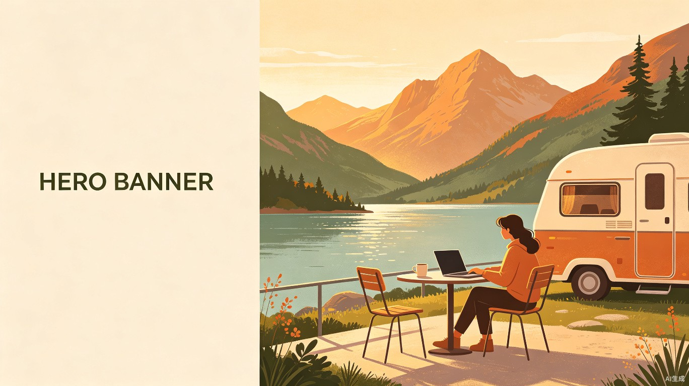
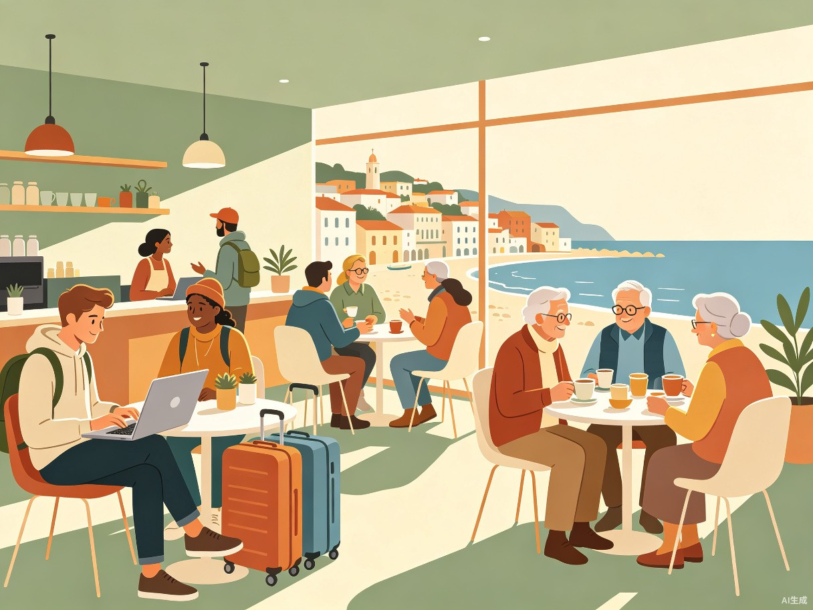

自游人 FreeRoamer
AI驱动的数字游民生活方式平台
用AI缝合流动人生的断层，让人无论走到哪里，都能拥有"在家的感觉"。
创意名称与介绍
「自游人」—— 为每一个选择"边走边活"的人，打造AI驱动的全链路生活陪伴平台。
想解决什么问题
数字游民和旅居养老群体在跨地域流动中，面临生活服务碎片化、远程工作支持缺失、健康管理断层、社交网络断裂四大核心痛点——每换一个城市，就要重新搭建一套生活基础设施，代价高昂且体验割裂。
为什么会想到做这个
远程办公普及与银发经济崛起，越来越多人选择"边走边活"。但市场缺乏以"流动人生"为核心逻辑的一体化平台，现有工具只解决单点问题。AI技术的成熟让"个性化旅居方案生成+全程智能陪伴"成为可能。
大概是什么产品
一款 AI驱动的数字游民生活方式平台（App+小程序+Web端），整合旅居地推荐、远程工作匹配、健康监测管理、本地生活融入、游民社区社交五大模块，提供从"想去哪"到"住得下、活得好、有归属"的全链路服务。
目标用户及痛点
面向哪些用户
自游人服务于三大核心群体，覆盖从青年到老年的全生命周期"流动人群"：
| 用户群体 | 画像描述 | 规模趋势 |
|---|---|---|
| 数字游民青年 | 25-40岁，远程工作者/自由职业者，追求地理自由，年均移动3-6个城市 | 全球超4000万，年增15% |
| 候鸟式旅居中年 | 40-60岁，半退休状态，季节性迁移，兼顾工作与生活品质 | 中国超8000万潜在人群 |
| 活力旅居养老族 | 55-75岁，身体健康、有旅居意愿，渴望丰富晚年生活而非居家养老 | 中国2.8亿老年人群中的高意愿层 |
数据来源：综合行业研究报告估算，展示三大群体的潜在规模与年增长率。
在什么场景下使用
AI旅居方案生成
AI根据用户的工作类型、预算、健康状况、季节偏好，生成个性化旅居目的地推荐与完整行程方案。
一键本地生活接入
一键获取本地办公空间、住宿、医疗机构、生活服务的AI精选清单，跳过试错成本，即刻落地。
AI健康与文化陪伴
AI健康助手持续监测身心状态，智能提醒就医/调整节奏；本地文化融入助手帮助快速破冰。
跨城无缝切换
AI自动衔接新旧城市的服务切换，健康档案、工作配置、社区关系无缝转移，告别"从头再来"。
当前痛点
如果没有自游人，用户现在会遇到以下不便：
- 信息过载且碎片化找住宿用Airbnb，找办公用coworking.com，找医院靠百度，找朋友靠缘分——每个城市都要重新摸索，耗费大量时间精力。
- 健康保障空白旅居中突发健康问题，异地医保不通、病史断层、找不到可靠医疗机构，小病拖成大病。
- 社交孤立严重数字游民和旅居老人普遍反映"到一个新地方最难受的是没人说话"，长期流动导致深度关系缺失。
- 养老选择受限传统养老院模式单一，想"换着地方养老"的老人缺乏信息和支持，子女也因无法掌握父母异地状态而焦虑。
- 工作连续性差游民在各地网络环境、办公条件参差不齐，影响远程工作稳定性。
基于用户调研估算，展示五大痛点在三大用户群体中的严重程度评分（满分10分）。
价值与意义
从商业价值与社会价值双重视角，自游人切入的是被严重低估的万亿级"流动人口服务"蓝海市场。
多维变现的蓝海市场
自游人切入"流动人口服务"这一被严重低估的万亿级市场。收入模型包括：① 旅居服务佣金（住宿/办公/医疗合作分成）；② AI高级会员订阅（个性化方案生成、专属健康管家）；③ 企业端服务（为远程办公企业员工提供旅居保障包）；④ 旅居保险分销。仅中国旅居养老市场预计2025年规模超4万亿元，数字游民服务全球市场年规模超800亿美元，且均处于高速增长期，尚无绝对头部玩家。

核心洞察：市场上不缺订房工具、不缺办公工具、不缺社交工具——缺的是一个以"流动的人生"为核心逻辑，将所有服务串联成连续体验的智能平台。自游人正是这个缺失的拼图。
愿景
"让人自由地流动，让流动不再意味着断裂。"
自游人，做每一个旅居者口袋里的AI生活管家——从想去哪，到住得下、活得好、有归属。